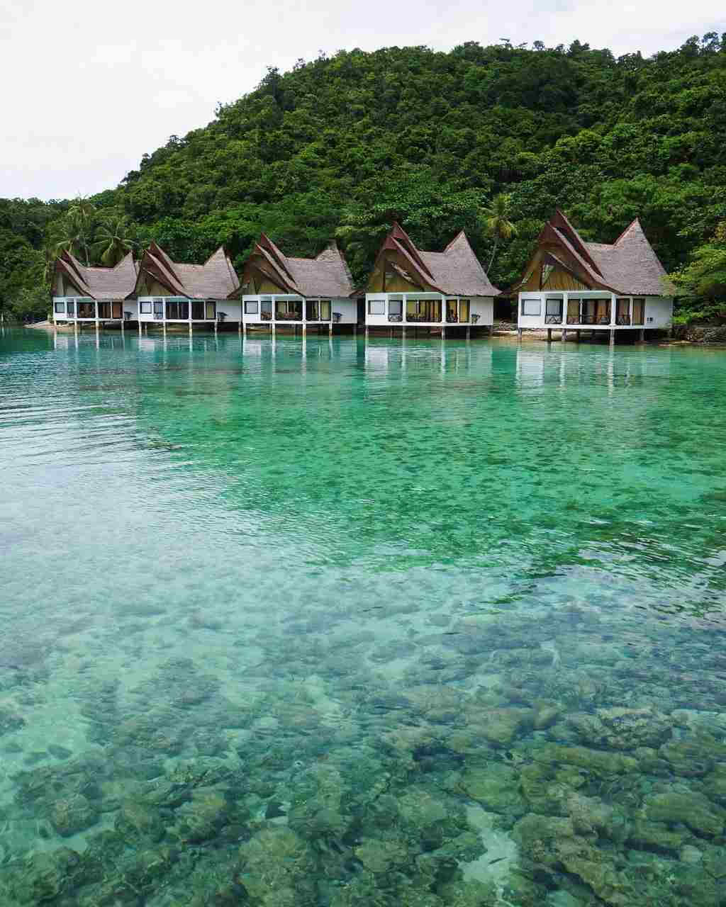

Most people who reach the Dinagat Islands come through San Jose and never see the coastal town of Cagdianao. That changed when the passenger boat between Del Carmen on Siargao and Cagdianao Port started running again. The town now works as a back door into the province, and as a base for the karst lagoons of Bucas Grande across the water.
Cagdianao itself is small and quiet. It has a long golden beach at Tagbirayan, a seafront boulevard where people come out in the late afternoon, a handful of local beach resorts, and the stilt cottages of Islas de Bucas sitting over clear green water. None of it is crowded, and none of it needs a tour.
This guide covers how to reach Cagdianao from either side, what to do once you are there, and how to plan a Sohoton Cove day without backtracking to Surigao City. The town's name is said to come from the Spanish cada dia linao, "calm every day", and it has been one of Dinagat's seven municipalities since 1959.

Cagdianao at a glance
- Where: a coastal town on Dinagat Island, one of the province's seven municipalities
- Fastest way in: the Del Carmen to Cagdianao boat, about 1 hour 20 minutes
- Other way in: Surigao City to San Jose by boat, then a habal-habal or bao-bao by road
- Nearby day trip: Sohoton Cove on Bucas Grande, part of Socorro, Surigao del Norte
- Money: cash only; withdraw in Surigao City, San Jose or on Siargao first
How to get to Cagdianao
There is no airport in the Dinagat Islands, so every trip starts from Siargao or Surigao City. Which one suits you depends on where you are coming from and how much time you have.
Already on Siargao
Direct boat from Del Carmen
The quickest route by far. One sailing a day, Monday to Saturday, lands you at Cagdianao Port in about an hour and 20 minutes.
Coming through Surigao
San Jose, then by road
Fly into Surigao or Butuan, take the boat to San Jose, then ride on along the coastal road. Allow most of a day.
The Siargao crossing
Del Carmen to Cagdianao
Leaves Del Carmen1:00 PMLeaves Cagdianao3:00 PMRunsMonday to Saturday
-
Step 1
Get to Del Carmen Port early
The boat is Nier Shipping Lines' M/V French 777, which went back into service on June 27, 2026 after a suspension. With only one trip a day, be at the port well before 1:00 PM.
-
Step 2
Confirm the day before
Ask at the port or your hotel whether the boat is sailing. Weather and maintenance can cancel a single daily trip without much notice, and there is no Sunday service.
-
Step 3
Cross to Cagdianao
About an hour and 20 minutes on the water. The sound can get choppy in the afternoon, so take seasickness tablets beforehand if you need them.
-
Step 4
Ride to your room
Habal-habal and bao-bao are the only land transport once you are off the boat. Message your resort ahead so someone meets you.
Heading back to Siargao? The return boat leaves Cagdianao at 3:00 PM, so finish any tour by early afternoon.
Through Surigao, the longer route runs by boat from Surigao City to San Jose, the provincial capital, and then on by road. Our guide to getting to the Dinagat Islands covers the flights, the Butuan option and the San Jose boat in detail. For the ride on to Cagdianao, agree the fare with your driver before setting off and allow at least an hour.
Things to do in Cagdianao
You can fill a slow day here without booking anything. These are the spots worth knowing about.
- Islas de BucasA row of white cottages on stilts with tall thatched roofs, set over clear green water at the foot of a forested hill. Ask ahead about room rates and whether day visitors are allowed.
- Tagbirayan BeachIn Barangay Tagbirayan, just north of the town proper. A long stretch of soft golden sand with few visitors on most days. Walk from town or take a habal-habal.
- Cagdianao BoulevardA simple seafront promenade where locals walk in the late afternoon. A good sunset spot on a day you are not crossing to Bucas Grande.
- Small beach resortsHinabyan, Leandro's Beach Resort and a few other family-run places offer basic beachfront rooms and cottages. Handy if you miss the boat back.
Crossing to Bucas Grande and Sohoton Cove
Bucas Grande belongs to Socorro, Surigao del Norte, not to Dinagat. It is a limestone island of about 128 square kilometres, protected as part of the Siargao Islands Protected Landscape and Seascape, and its best-known corner is Sohoton Cove: a cluster of islets, lagoons, stone arches and caves joined by narrow channels.
Boatmen in Cagdianao and Socorro run day trips there. The catch is the tide. Boats enter the cove through a small cave mouth that only opens at low tide, so the whole day is built around that window. A typical loop takes in Hagukan Cave, Magkukuob Cave with its optional cliff jump, Tiktikan Lagoon, and the stingless jellyfish sanctuary, which is best from March to May and sometimes into early June. Lunch is often on Bubon Beach.
A shared tour has run around ₱1,950 per person for a group of four with lunch, but prices move with the season and fuel. Before you agree, ask whether the price covers the park entrance, the paddle boat, the environmental fee and the meal. Our Bucas Grande and Sohoton Cove guide goes deeper into the cove, the jellyfish and why quoted prices vary so much.
A one-day plan from Cagdianao
Day trip · Bucas GrandeSohoton Cove and back by mid-afternoon
- 7:00 AMBoat from Cagdianao to Bucas GrandeAgree the route, stops and price with the boatman the evening before
- MorningInto Sohoton Cove at low tideHagukan Cave, Tiktikan Lagoon, Magkukuob and the jellyfish lagoon in season
- MiddayLunch on Bubon BeachIf the tour includes it; otherwise pack food from Cagdianao
- AfternoonBack in CagdianaoBy 3:00 PM for the boat to Siargao, or stay for sunset at Tagbirayan and the boulevard
With two days, sleep one night in Cagdianao or Socorro. You won't be racing the tide, and you get a quiet evening on the beach as well.
Before you go
Know this first
- Plan around low tideThe Sohoton entrance closes when the water rises. Your boatman, your resort or the Socorro tourism office can tell you the window. Mornings usually work best.
- Bring cash in small billsThere are no ATMs on Bucas Grande, and Cagdianao runs on cash. The park and the boat charge separate fees.
- Pack for sharp rockAqua shoes, a dry bag and reef-safe sunscreen. The limestone cuts and the channels are shallow.
- Go easy on the jellyfishSwim with them, but don't touch or lift them, and skip flash photography.
- Expect weak signalDownload offline maps before you leave Siargao or San Jose.
- Watch the seasonAfternoon crossings get rougher, especially from November to February. Take seasickness medicine early if you need it.
Cagdianao won't be anyone's main reason to visit Dinagat, but it fills a real gap: a calm place to sleep between Siargao and Sohoton, with a beach that is yours for most of the afternoon. If you have more days, explore the rest of the island with our Dinagat Islands travel guide for the lagoons and beaches around Libjo and Basilisa.

Comments
No comments yet. Been here recently? Share a tip or ask a question.
Leave a Reply